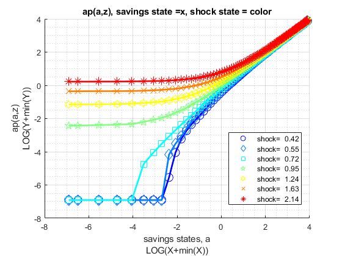
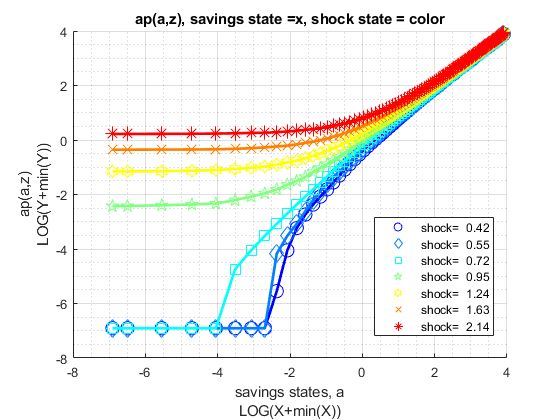
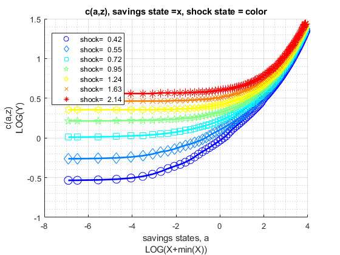
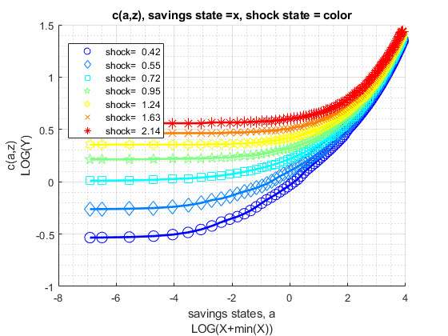
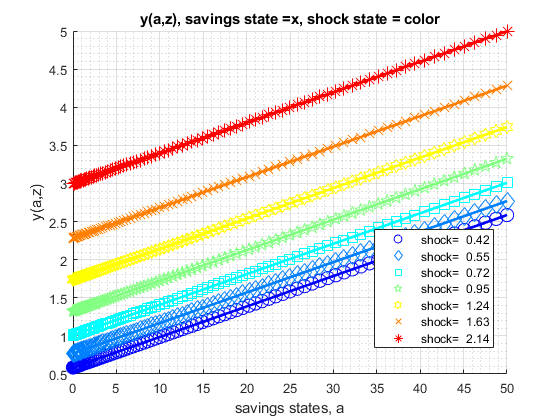
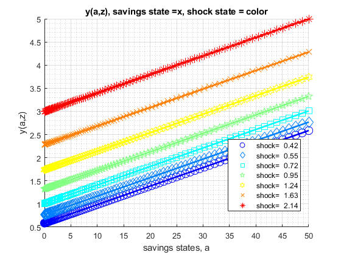

FF_VFI_AZ_BISECT_VEC (vectprozed exact choice) Dynamic Savings Problem
Fast vectorized solution for solving the dynamic programming problem with fixed asset state space, but continuous asset choices. Solution obtained via bi(multi)-section. Solves for the fraction of resources to save, this is then translated to asset choice level
Uses first order conditions. The first order condition has two components: let u(c(ap,a,z)) be current utility, let beta*EV(ap|z) be the expected value from making choice ap given current shock z. d(u)/d(ap) is analytical; the EV(ap|z) are a set of linear splines each spline for each shock point z, dEV/d(ap) are just the slopes for each spline segment. With both partials, we can easily use bisection to solve for optimal exact choices.
Obtains policy and value functions. Shock is AR(1). This function is looped, and extremely slow when state-space increases in size. This function is useful as a working template for developing models that rely on asset and shocks.
* MP_PARAMS controls model preference, prices, shock and asset grid parameters. * MP_SUPPORT controls convergence criterion, printing and summary controls
mp_params = containers.Map('KeyType','char', 'ValueType','any');
mp_params('fl_crra') = 1.5;
mp_params('fl_beta') = 0.95;
mp_params('fl_w') = 1.05;
mp_params('fl_r') = 0.03;
mp_params('fl_a_min') = 0;
mp_params('fl_a_max') = 50;
mp_params('it_a_n') = 25;
mp_params('st_grid_type') = 'grid_powerspace';
mp_params('fl_z_persist') = 0.60;
mp_params('fl_shk_std') = 0.10;
mp_params('it_z_n') = 5;
mp_params('st_grid_type') = 'grid_powerspace'; mp_support = containers.Map('KeyType','char', 'ValueType','any');
mp_support('fl_lowestc') = -10e10;
mp_support('it_maxiter_val') = 500;
mp_support('fl_tol_val') = 10e-5;
% printer various information
mp_support('bl_timer') = true;
mp_support('bl_print_params') = false;
mp_support('bl_print_iterinfo') = false;
% These names must match keys of mp_solu: v=value, ap=savings choice,
c=consumption, y=income, coh=cash-on-hand (income + savings),
savefraccoh = ap/coh.
% what outcomes to store in the mp_solu for export
mp_support('ls_slout') = {'v', 'ap', 'c', 'y', 'coh', 'savefraccoh'};
% outcome for ff_container_map_display
mp_support('ls_ffcmd') = {'v', 'ap', 'c', 'y', 'coh', 'savefraccoh'};
% outcome for ff_summ_nd_array
mp_support('ls_ffsna') = {'v', 'ap', 'c', 'y', 'coh', 'savefraccoh'};
% outcome for ff_graph_grid
mp_support('ls_ffgrh') = {'v', 'ap', 'c', 'y', 'coh', 'savefraccoh'};
% outcome for ff_summ_nd_array
mp_support('ffsna_opt_it_row_n_keep') = 10;
% outcome for ff_summ_nd_array
mp_support('ffsna_opt_it_col_n_keep') = 9;[MP_VALPOL_OUT, FLAG] = FF_VFI_AZ_BISECT_VEC() default savings and shock model simulation
[MP_VALPOL_OUT, FLAG] = FF_VFI_AZ_BISECT_VEC(MP_PARAMS) change model parameters through MP_PARAMS
[MP_VALPOL_OUT, FLAG] = FF_VFI_AZ_BISECT_VEC(MP_PARAMS, MP_SUPPORT) change various printing, storaging, graphing, convergence etc controls through MP_SUPPORT
[MP_VALPOL_OUT, FLAG] = FF_VFI_AZ_BISECT_VEC(MP_PARAMS, MP_SUPPORT, MP_SUPPORT_GRAPH) also changing graphing options, see the FF_GRAPH_GRID function for what key value paris can be specified.
see also FX_VFI_AZ_BISECT_VEC, FF_VFI_AZ_BISECT_LOOP, FF_VFI_AZ_LOOP, FF_VFI_AZ_VEC, FF_GRAPH_GRID
Contents
- Set Default and Parse Inputs
- Default Model Parameters
- Parse mp_params
- Generate A and Z Grids
- Default Support Parameters
- Whether Additional Outcomes Should be Stored
- Initialize Matrix
- Define Functions
- Compute Fixed Resource Matrix by States
- Dynamically Solve
- Convergence Results
- Results for Printing, and Graphing
- Print Parameter Information
- Show Value Function Convergence Information
- ls_ffcmd summary
- ls_ffsna summarize full
- ls_ffgrh graph
- Store Results for Output
function [mp_valpol_out, flag] = ff_vfi_az_bisec_vec(varargin)
Set Default and Parse Inputs
if (~isempty(varargin)) if (length(varargin) == 1) [mp_params_ext] = varargin{:}; elseif (length(varargin) == 2) [mp_params_ext, mp_support_ext] = varargin{:}; end else close all; mp_support_ext = containers.Map('KeyType','char', 'ValueType','any'); mp_support_ext('bl_timer') = true; mp_support_ext('bl_print_params') = true; mp_support_ext('bl_print_iterinfo') = true; mp_support_ext('ls_ffcmd') = {'v', 'ap', 'c', 'y', 'coh', 'savefraccoh'}; mp_support_ext('ls_ffsna') = {'ap'}; mp_support_ext('ls_ffgrh') = {'v', 'ap', 'c', 'y', 'savefraccoh'}; mp_support_ext('ls_store') = {'v', 'ap', 'c', 'y', 'coh'}; mp_support_ext('ffsna_opt_it_row_n_keep') = 10; mp_support_ext('ffsna_opt_it_col_n_keep') = 9; end
Default Model Parameters
support_map
mp_params = containers.Map('KeyType','char', 'ValueType','any'); mp_params('fl_crra') = 1.5; mp_params('fl_beta') = 0.94; mp_params('fl_w') = 1.28; mp_params('fl_r') = 0.025; mp_params('fl_a_min') = 0; mp_params('fl_a_max') = 50; mp_params('it_a_n') = 100; mp_params('st_grid_type') = 'grid_linspace'; mp_params('fl_z_persist') = 0.80; mp_params('fl_shk_std') = 0.20; mp_params('it_z_n') = 7; % override default support_map values if (length(varargin)>=1) mp_params = [mp_params; mp_params_ext]; end
Parse mp_params
params_group = values(mp_params, {'fl_crra', 'fl_beta'});
[fl_crra, fl_beta] = params_group{:};
params_group = values(mp_params, {'fl_w', 'fl_r'});
[fl_w, fl_r] = params_group{:};
params_group = values(mp_params, {'fl_a_min', 'fl_a_max', 'it_a_n', 'st_grid_type'});
[fl_a_min, fl_a_max, it_a_n, st_grid_type] = params_group{:};
params_group = values(mp_params, {'fl_z_persist', 'fl_shk_std', 'it_z_n'});
[fl_z_persist, fl_shk_std, it_z_n] = params_group{:};
Generate A and Z Grids
Same min and max and grid points
[ar_a] = ff_saveborr_grid(fl_a_min, fl_a_max, it_a_n, st_grid_type); ar_a = ar_a'; % shock vector and transition, normalize mean exp(shk) to 1 [ar_z, mt_z_trans] = ffy_rouwenhorst(fl_z_persist, fl_shk_std, it_z_n); ar_z = exp(ar_z'); % normalize mean of exp to 1, fl_shk_std does not shift mean. ar_z_stationary = mt_z_trans^1000; ar_z_stationary = ar_z_stationary(1,:); fl_labor_agg = ar_z_stationary*exp(ar_z'); ar_z = exp(ar_z)/fl_labor_agg;
Default Support Parameters
support_map
mp_support = containers.Map('KeyType','char', 'ValueType','any'); % Model Control mp_support('fl_lowestc') = -10e10; % Iteration Control mp_support('it_maxiter_val') = 500; mp_support('fl_tol_val') = 10e-5; % printer various information mp_support('bl_timer') = true; mp_support('bl_print_params') = false; mp_support('bl_print_iterinfo') = false; % These names must match keys of mp_solu: % what outcomes to store in the mp_solu for export mp_support('ls_slout') = {'v', 'ap', 'c', 'y', 'coh', 'savefraccoh'}; % outcome for ff_container_map_display mp_support('ls_ffcmd') = {'ap'}; % outcome for ff_summ_nd_array mp_support('ls_ffsna') = {}; % outcome for ff_graph_grid mp_support('ls_ffgrh') = {}; % outcome for ff_summ_nd_array mp_support('ffsna_opt_it_row_n_keep') = 10; % outcome for ff_summ_nd_array mp_support('ffsna_opt_it_col_n_keep') = 9; % override default support_map values if (length(varargin)>=2 || isempty(varargin)) mp_support = [mp_support; mp_support_ext]; end % Parse mp_support params_group = values(mp_support, {'fl_lowestc'}); [fl_lowestc] = params_group{:}; params_group = values(mp_support, {'it_maxiter_val', 'fl_tol_val'}); [it_maxiter_val, fl_tol_val] = params_group{:}; params_group = values(mp_support, {'bl_timer', 'bl_print_params', 'bl_print_iterinfo'}); [bl_timer, bl_print_params, bl_print_iterinfo] = params_group{:}; params_group = values(mp_support, ... {'ls_slout', 'ls_ffcmd', 'ls_ffsna', 'ls_ffgrh',... 'ffsna_opt_it_row_n_keep', 'ffsna_opt_it_col_n_keep'}); [ls_slout, ls_ffcmd, ls_ffsna, ls_ffgrh,... ffsna_opt_it_row_n_keep, ffsna_opt_it_col_n_keep] = params_group{:};
Whether Additional Outcomes Should be Stored
when state space are large, might not be a good idea to store all possible model output matrixes, but could be controlled with these if things should be outputed. If bl_store_more = true, will output store all additional possible outcomes if bl_vfi_store_all = true. Internally, which output becomes tabular or graphical controled by ls_ffcmd, ls_ffsna, and ls_ffgrh.
% If to store additional outcomes cl_more = {'c', 'y'}; ar_find_slout = cell2mat(cellfun(@(m) find(strcmp(ls_slout, m)), cl_more, 'UniformOutput', false)); ar_find_ffcmd = cell2mat(cellfun(@(m) find(strcmp(ls_ffcmd, m)), cl_more, 'UniformOutput', false)); ar_find_ffsna = cell2mat(cellfun(@(m) find(strcmp(ls_ffsna, m)), cl_more, 'UniformOutput', false)); ar_find_ffgrh = cell2mat(cellfun(@(m) find(strcmp(ls_ffgrh, m)), cl_more, 'UniformOutput', false)); if (length(ar_find_slout) + length(ar_find_ffcmd) + length(ar_find_ffsna) + length(ar_find_ffgrh) >1) bl_store_more = true; end
Initialize Matrix
mt_val_lst = zeros(length(ar_a),length(ar_z)); mt_val_cur = mt_val_lst; mt_aprime_lst = zeros(length(ar_a),length(ar_z)); mt_aprime_cur = mt_aprime_lst; mt_aprime_idx = zeros(length(ar_a),length(ar_z)); ar_val_diff_norm = zeros([it_maxiter_val, 1]); ar_pol_diff_norm = zeros([it_maxiter_val, 1]); mt_pol_perc_change = zeros([it_maxiter_val, length(ar_z)]); if (bl_store_more) mt_c = zeros(length(ar_a),length(ar_z)); mt_y = zeros(length(ar_a),length(ar_z)); mt_coh = zeros(length(ar_a),length(ar_z)); end
Define Functions
% Current Function and their Derivatives if(fl_crra == 1) f_util = @(c) log(c); f_du_da = @(c) -1./(c); else f_util = @(c) (((c).^(1-fl_crra)-1)./(1-fl_crra)); f_du_da = @(c) -1./(c.^fl_crra); end % Utility f_U = @(u, Ev) (u + fl_beta.*Ev); f_FOC = @(duda, devda) (duda + fl_beta.*devda); % resources f_y = @(z, b) (z*fl_w + b.*(fl_r)); f_coh = @(z, b) (z*fl_w + b.*(1+fl_r)); f_cons = @(z, b, bprime) (f_coh(z, b) - bprime);
Compute Fixed Resource Matrix by States
% C1. Resource Matrix Broadcast: length(ar_a) by length(ar_z) matrix mt_resources = f_coh(ar_z, ar_a'); mt_z = ar_z(ones([1,length(ar_a)]),1:length(ar_z)); mt_z_ctr = repmat(1:length(ar_z), [length(ar_a), 1]); % C2. Flatten the resource matrix, amz = a mesh z: ar_resources_amz = mt_resources(:); ar_z_amz = mt_z(:); ar_z_ctr_amz = mt_z_ctr(:);
Dynamically Solve
if (bl_timer) tic end % initialize fl_diff = 1; it_iter = 0; % After converge, one more iteration to store results bl_continue = true; bl_converged = false; % Loop 0, continuous VFI iteration until convergence while bl_continue % A. Solve For EV(ap,z) = EV(ap,zp|z)f(zp|z) for all possible ap points % Note that EV(ap,z) is unrelated to current asset state a mt_ev_ap_z = zeros(length(ar_a), length(ar_z)); for it_z_ctr = 1:length(ar_z) for it_ap_ctr = 1:length(ar_a) % Add to each cell of mt_ev_ap_z, integrating over f(zp|z) for it_zprime_ctr = 1:length(ar_z) mt_ev_ap_z(it_ap_ctr, it_z_ctr) = mt_ev_ap_z(it_ap_ctr, it_z_ctr) ... + fl_beta*mt_z_trans(it_z_ctr,it_zprime_ctr)*mt_val_lst(it_ap_ctr,it_zprime_ctr); end end end % B. z specific EV Slope: EV(ap,z)/d(ap) % Given the discretized EV matrix structure, we have a matrix of % splines, get the slopes of the spline segments. These are the % derivatives of the marginal effects of additional savings for each % splinde segment conditional on shock. mt_deri_dev_dap = diff(mt_ev_ap_z)./diff(ar_a'); % C. Generate Vectorized FOC Evaluator % x = fl_aprime_frac fc_ffi_vec_foc_u_v_ap = @(x) ffi_vec_foc_u_v_ap(... x, ar_a, ... ar_resources_amz, ar_z_ctr_amz, mt_deri_dev_dap, ... f_du_da, f_FOC); % D. Solve via Bisection [ar_opti_saveborr_frac_amz] = ff_optim_bisec_savezrone(fc_ffi_vec_foc_u_v_ap); % E. Evaluate at Bounds ar_nan_idx = isnan(ar_opti_saveborr_frac_amz); if(sum(ar_nan_idx)>0) ar_min_max = [0, 1-1E-5]; mt_val_min_max = zeros(sum(ar_nan_idx), length(ar_min_max)); for it_minmax = [1,2] [~, mt_val_min_max(:,it_minmax), ~] = ffi_vec_u_v_ap(... ar_min_max(it_minmax), ar_a, ... ar_resources_amz(ar_nan_idx), ar_z_ctr_amz(ar_nan_idx), ... mt_ev_ap_z, mt_deri_dev_dap, ... f_util, f_U); end [~, it_max] = max(mt_val_min_max, [], 2); ar_opti_saveborr_frac_amz(ar_nan_idx) = ar_min_max(it_max); end % F. Evaluate [ar_aprime_amz, ar_val_opti_amz, ar_c_opti_amz] = ffi_vec_u_v_ap(... ar_opti_saveborr_frac_amz, ar_a, ... ar_resources_amz, ar_z_ctr_amz, ... mt_ev_ap_z, mt_deri_dev_dap, ... f_util, f_U); % G. Record Results mt_val_cur = reshape(ar_val_opti_amz, [length(ar_a),length(ar_z)]); mt_aprime_cur = reshape(ar_aprime_amz, [length(ar_a),length(ar_z)]); % H. Save Additional Results if bl_converged [~, ar_opti_a_idx_amz] = min(abs(ar_a-ar_opti_saveborr_frac_amz),[],2); mt_aprime_idx = reshape(ar_opti_a_idx_amz, [length(ar_a),length(ar_z)]); if (bl_store_more) mt_c = reshape(ar_c_opti_amz, [length(ar_a),length(ar_z)]); mt_y = mt_resources - ar_a'; mt_coh = mt_resources; end end % I. Iteration Convergence Checking % Continuation Conditions: it_iter = it_iter + 1; fl_diff = norm(mt_val_cur-mt_val_lst); diff_pol = norm(mt_aprime_cur-mt_aprime_lst); % Difference across iterations if (bl_print_iterinfo) ar_val_diff_norm(it_iter) = fl_diff; ar_pol_diff_norm(it_iter) = diff_pol; mt_pol_perc_change(it_iter, :) = sum((mt_aprime_cur ~= mt_aprime_lst))/(length(ar_a)); end % Update mt_val_lst = mt_val_cur; mt_aprime_lst = mt_aprime_cur; % Update Continue Criterion if bl_converged bl_continue = false; elseif(fl_diff <= fl_tol_val || it_iter >= it_maxiter_val) bl_converged = true; end % J. Print Iteration Record if(bl_print_iterinfo) disp(['ff_vfi_az_bisec_loop, it_iter:' num2str(it_iter) ... ', fl_diff:' num2str(fl_diff)]); end end
ff_vfi_az_bisec_loop, it_iter:1, fl_diff:40.8357 ff_vfi_az_bisec_loop, it_iter:2, fl_diff:28.9968 ff_vfi_az_bisec_loop, it_iter:3, fl_diff:22.1716 ff_vfi_az_bisec_loop, it_iter:4, fl_diff:17.3532 ff_vfi_az_bisec_loop, it_iter:5, fl_diff:13.7493 ff_vfi_az_bisec_loop, it_iter:6, fl_diff:10.9744 ff_vfi_az_bisec_loop, it_iter:7, fl_diff:8.8003 ff_vfi_az_bisec_loop, it_iter:8, fl_diff:7.0776 ff_vfi_az_bisec_loop, it_iter:9, fl_diff:5.702 ff_vfi_az_bisec_loop, it_iter:10, fl_diff:4.5979 ff_vfi_az_bisec_loop, it_iter:11, fl_diff:3.7087 ff_vfi_az_bisec_loop, it_iter:12, fl_diff:2.9911 ff_vfi_az_bisec_loop, it_iter:13, fl_diff:2.4115 ff_vfi_az_bisec_loop, it_iter:14, fl_diff:1.9435 ff_vfi_az_bisec_loop, it_iter:15, fl_diff:1.5659 ff_vfi_az_bisec_loop, it_iter:16, fl_diff:1.2618 ff_vfi_az_bisec_loop, it_iter:17, fl_diff:1.0174 ff_vfi_az_bisec_loop, it_iter:18, fl_diff:0.82192 ff_vfi_az_bisec_loop, it_iter:19, fl_diff:0.66578 ff_vfi_az_bisec_loop, it_iter:20, fl_diff:0.54187 ff_vfi_az_bisec_loop, it_iter:21, fl_diff:0.44395 ff_vfi_az_bisec_loop, it_iter:22, fl_diff:0.36654 ff_vfi_az_bisec_loop, it_iter:23, fl_diff:0.30552 ff_vfi_az_bisec_loop, it_iter:24, fl_diff:0.25755 ff_vfi_az_bisec_loop, it_iter:25, fl_diff:0.2196 ff_vfi_az_bisec_loop, it_iter:26, fl_diff:0.18904 ff_vfi_az_bisec_loop, it_iter:27, fl_diff:0.16392 ff_vfi_az_bisec_loop, it_iter:28, fl_diff:0.14289 ff_vfi_az_bisec_loop, it_iter:29, fl_diff:0.12502 ff_vfi_az_bisec_loop, it_iter:30, fl_diff:0.10968 ff_vfi_az_bisec_loop, it_iter:31, fl_diff:0.096409 ff_vfi_az_bisec_loop, it_iter:32, fl_diff:0.084858 ff_vfi_az_bisec_loop, it_iter:33, fl_diff:0.074766 ff_vfi_az_bisec_loop, it_iter:34, fl_diff:0.065922 ff_vfi_az_bisec_loop, it_iter:35, fl_diff:0.058156 ff_vfi_az_bisec_loop, it_iter:36, fl_diff:0.051325 ff_vfi_az_bisec_loop, it_iter:37, fl_diff:0.04531 ff_vfi_az_bisec_loop, it_iter:38, fl_diff:0.040009 ff_vfi_az_bisec_loop, it_iter:39, fl_diff:0.035334 ff_vfi_az_bisec_loop, it_iter:40, fl_diff:0.031209 ff_vfi_az_bisec_loop, it_iter:41, fl_diff:0.027568 ff_vfi_az_bisec_loop, it_iter:42, fl_diff:0.024354 ff_vfi_az_bisec_loop, it_iter:43, fl_diff:0.021516 ff_vfi_az_bisec_loop, it_iter:44, fl_diff:0.019009 ff_vfi_az_bisec_loop, it_iter:45, fl_diff:0.016795 ff_vfi_az_bisec_loop, it_iter:46, fl_diff:0.014839 ff_vfi_az_bisec_loop, it_iter:47, fl_diff:0.013111 ff_vfi_az_bisec_loop, it_iter:48, fl_diff:0.011584 ff_vfi_az_bisec_loop, it_iter:49, fl_diff:0.010235 ff_vfi_az_bisec_loop, it_iter:50, fl_diff:0.0090438 ff_vfi_az_bisec_loop, it_iter:51, fl_diff:0.0079909 ff_vfi_az_bisec_loop, it_iter:52, fl_diff:0.0070607 ff_vfi_az_bisec_loop, it_iter:53, fl_diff:0.0062388 ff_vfi_az_bisec_loop, it_iter:54, fl_diff:0.0055125 ff_vfi_az_bisec_loop, it_iter:55, fl_diff:0.0048709 ff_vfi_az_bisec_loop, it_iter:56, fl_diff:0.0043039 ff_vfi_az_bisec_loop, it_iter:57, fl_diff:0.0038029 ff_vfi_az_bisec_loop, it_iter:58, fl_diff:0.0033602 ff_vfi_az_bisec_loop, it_iter:59, fl_diff:0.0029691 ff_vfi_az_bisec_loop, it_iter:60, fl_diff:0.0026235 ff_vfi_az_bisec_loop, it_iter:61, fl_diff:0.0023181 ff_vfi_az_bisec_loop, it_iter:62, fl_diff:0.0020483 ff_vfi_az_bisec_loop, it_iter:63, fl_diff:0.0018099 ff_vfi_az_bisec_loop, it_iter:64, fl_diff:0.0015992 ff_vfi_az_bisec_loop, it_iter:65, fl_diff:0.001413 ff_vfi_az_bisec_loop, it_iter:66, fl_diff:0.0012486 ff_vfi_az_bisec_loop, it_iter:67, fl_diff:0.0011032 ff_vfi_az_bisec_loop, it_iter:68, fl_diff:0.00097481 ff_vfi_az_bisec_loop, it_iter:69, fl_diff:0.00086134 ff_vfi_az_bisec_loop, it_iter:70, fl_diff:0.00076108 ff_vfi_az_bisec_loop, it_iter:71, fl_diff:0.00067249 ff_vfi_az_bisec_loop, it_iter:72, fl_diff:0.00059422 ff_vfi_az_bisec_loop, it_iter:73, fl_diff:0.00052505 ff_vfi_az_bisec_loop, it_iter:74, fl_diff:0.00046393 ff_vfi_az_bisec_loop, it_iter:75, fl_diff:0.00040993 ff_vfi_az_bisec_loop, it_iter:76, fl_diff:0.00036222 ff_vfi_az_bisec_loop, it_iter:77, fl_diff:0.00032005 ff_vfi_az_bisec_loop, it_iter:78, fl_diff:0.0002828 ff_vfi_az_bisec_loop, it_iter:79, fl_diff:0.00024988 ff_vfi_az_bisec_loop, it_iter:80, fl_diff:0.0002208 ff_vfi_az_bisec_loop, it_iter:81, fl_diff:0.00019509 ff_vfi_az_bisec_loop, it_iter:82, fl_diff:0.00017239 ff_vfi_az_bisec_loop, it_iter:83, fl_diff:0.00015232 ff_vfi_az_bisec_loop, it_iter:84, fl_diff:0.00013459 ff_vfi_az_bisec_loop, it_iter:85, fl_diff:0.00011892 ff_vfi_az_bisec_loop, it_iter:86, fl_diff:0.00010508 ff_vfi_az_bisec_loop, it_iter:87, fl_diff:9.285e-05 ff_vfi_az_bisec_loop, it_iter:88, fl_diff:8.2042e-05
Convergence Results
it_iter_last = it_iter; if fl_diff <= fl_tol_val || it_iter>=it_maxiter_val mt_val = mt_val_cur; mt_aprime = mt_aprime_cur; if (it_iter>=it_maxiter_val) flag = 2; else flag = 1; end else mt_val = zeros(size(mt_val_lst)); mt_aprime = zeros(size(mt_val_lst)); flag = 0; end if (bl_timer) toc end
Elapsed time is 0.434157 seconds.
Results for Printing, and Graphing
mp_print_graph = containers.Map('KeyType','char', 'ValueType','any'); mp_print_graph('v') = mt_val_cur; mp_print_graph('ap') = mt_aprime; if (bl_store_more) mp_print_graph('c') = mt_c; mp_print_graph('y') = mt_y; mp_print_graph('coh') = mt_coh; mp_print_graph('savefraccoh') = mt_aprime./mt_coh; end
Print Parameter Information
if (bl_print_params) ff_container_map_display(mp_params); ff_container_map_display(mp_support); end
----------------------------------------
xxxxxxxxxxxxxxxxxxxxxxxxxxxxxxxxxxxxxxxx
CONTAINER NAME: mp_params Scalars
xxxxxxxxxxxxxxxxxxxxxxxxxxxxxxxxxxxxxxxx
i idx value
__ ___ _____
fl_a_max 1 1 50
fl_a_min 2 2 0
fl_beta 3 3 0.94
fl_crra 4 4 1.5
fl_r 5 5 0.025
fl_shk_std 6 6 0.2
fl_w 7 7 1.28
fl_z_persist 8 8 0.8
it_a_n 9 9 100
it_z_n 10 10 7
----------------------------------------
xxxxxxxxxxxxxxxxxxxxxxxxxxxxxxxxxxxxxxxx
CONTAINER NAME: mp_params String
xxxxxxxxxxxxxxxxxxxxxxxxxxxxxxxxxxxxxxxx
i idx string
___ ____ _______________
st_grid_type "1" "11" "grid_linspace"
pos = 11 ; key = ls_ffsna
'ap'
----------------------------------------
xxxxxxxxxxxxxxxxxxxxxxxxxxxxxxxxxxxxxxxx
CONTAINER NAME: mp_support Scalars
xxxxxxxxxxxxxxxxxxxxxxxxxxxxxxxxxxxxxxxx
i idx value
_ ___ ______
bl_print_iterinfo 1 1 1
bl_print_params 2 2 1
bl_timer 3 3 1
ffsna_opt_it_col_n_keep 4 4 9
ffsna_opt_it_row_n_keep 5 5 10
fl_lowestc 6 6 -1e+11
fl_tol_val 7 7 0.0001
it_maxiter_val 8 8 500
----------------------------------------
xxxxxxxxxxxxxxxxxxxxxxxxxxxxxxxxxxxxxxxx
CONTAINER NAME: mp_support String
xxxxxxxxxxxxxxxxxxxxxxxxxxxxxxxxxxxxxxxx
i idx string
___ ____ __________________________
ls_ffcmd "1" "9" "v;ap;c;y;coh;savefraccoh"
ls_ffgrh "2" "10" "v;ap;c;y;savefraccoh"
ls_slout "3" "12" "v;ap;c;y;coh;savefraccoh"
ls_store "4" "13" "v;ap;c;y;coh"
Show Value Function Convergence Information
if (bl_print_iterinfo) it_z_select = unique(round(linspace(1,length(ar_z), 7))); ar_z_select = ar_z(it_z_select); tb_valpol_alliter = array2table([ar_val_diff_norm(1:it_iter_last)';... ar_pol_diff_norm(1:it_iter_last)';... mt_pol_perc_change(1:it_iter_last,it_z_select)']'); ar_st_col_zs = matlab.lang.makeValidName(strcat('z=', string(ar_z_select))); cl_col_names = ['valgap', 'polgap', ar_st_col_zs]; cl_row_names = strcat('iter=', string(1:it_iter_last)); tb_valpol_alliter.Properties.VariableNames = cl_col_names; tb_valpol_alliter.Properties.RowNames = cl_row_names; disp('xxxxxxxxxxxxxxxxxxxxxxxxxxxxxxxxxxxxxxxx'); disp('Value Function Iteration Per Iteration Changes'); disp('xxxxxxxxxxxxxxxxxxxxxxxxxxxxxxxxxxxxxxxx'); disp('valgap = norm(mt_val - mt_val_cur): value function difference across iterations'); disp('polgap = norm(mt_pol_a - mt_pol_a_cur): policy function difference across iterations'); disp(['z1 = z1 perc change: sum((mt_pol_a ~= mt_pol_a_cur))/(it_a_n): percentage of state space'... ' points conditional on shock where the policy function is changing across iterations']); disp(tb_valpol_alliter); end
xxxxxxxxxxxxxxxxxxxxxxxxxxxxxxxxxxxxxxxx
Value Function Iteration Per Iteration Changes
xxxxxxxxxxxxxxxxxxxxxxxxxxxxxxxxxxxxxxxx
valgap = norm(mt_val - mt_val_cur): value function difference across iterations
polgap = norm(mt_pol_a - mt_pol_a_cur): policy function difference across iterations
z1 = z1 perc change: sum((mt_pol_a ~= mt_pol_a_cur))/(it_a_n): percentage of state space points conditional on shock where the policy function is changing across iterations
valgap polgap z_0_50352 z_0_57817 z_0_69323 z_0_87975 z_1_2028 z_1_8136 z_3_1094
__________ _________ _________ _________ _________ _________ ________ ________ ________
iter=1 40.836 0 0 0 0 0 0 0 0
iter=2 28.997 375.09 0.99 0.99 0.99 0.99 0.99 1 1
iter=3 22.172 124.75 0.99 0.99 0.99 0.99 0.99 0.99 1
iter=4 17.353 61.962 0.98 0.98 0.98 0.98 0.99 1 1
iter=5 13.749 36.787 0.98 0.98 0.98 0.98 0.99 1 1
iter=6 10.974 24.157 0.98 0.98 0.98 0.98 0.98 0.99 1
iter=7 8.8003 16.864 0.98 0.98 0.98 0.96 0.98 1 1
iter=8 7.0776 12.364 0.96 0.97 0.97 0.97 0.99 0.99 1
iter=9 5.702 9.296 0.97 0.97 0.96 0.96 0.98 0.98 1
iter=10 4.5979 7.1818 0.95 0.96 0.96 0.96 0.97 0.98 0.99
iter=11 3.7087 5.6429 0.95 0.95 0.97 0.97 0.98 0.99 1
iter=12 2.9911 4.4544 0.94 0.94 0.96 0.96 0.97 0.98 0.99
iter=13 2.4115 3.578 0.93 0.96 0.95 0.96 0.96 0.98 0.98
iter=14 1.9435 2.8841 0.93 0.93 0.94 0.96 0.95 0.96 0.98
iter=15 1.5659 2.3184 0.9 0.89 0.92 0.94 0.95 0.97 0.97
iter=16 1.2618 1.8908 0.87 0.91 0.9 0.94 0.95 0.96 0.98
iter=17 1.0174 1.5296 0.86 0.85 0.87 0.91 0.94 0.97 0.96
iter=18 0.82192 1.2252 0.83 0.81 0.86 0.9 0.95 0.95 0.98
iter=19 0.66578 0.97788 0.79 0.79 0.82 0.89 0.92 0.94 0.96
iter=20 0.54187 0.7663 0.76 0.78 0.84 0.83 0.87 0.94 0.94
iter=21 0.44395 0.60729 0.73 0.75 0.76 0.84 0.84 0.93 0.93
iter=22 0.36654 0.47376 0.7 0.73 0.73 0.79 0.85 0.9 0.93
iter=23 0.30552 0.35188 0.64 0.67 0.69 0.74 0.8 0.85 0.93
iter=24 0.25755 0.25145 0.6 0.61 0.64 0.71 0.73 0.82 0.9
iter=25 0.2196 0.16914 0.56 0.58 0.61 0.63 0.65 0.77 0.87
iter=26 0.18904 0.11285 0.46 0.56 0.5 0.55 0.66 0.68 0.77
iter=27 0.16392 0.071394 0.41 0.36 0.44 0.49 0.58 0.65 0.75
iter=28 0.14289 0.044841 0.37 0.41 0.36 0.37 0.44 0.53 0.64
iter=29 0.12502 0.029736 0.27 0.24 0.32 0.37 0.44 0.51 0.58
iter=30 0.10968 0.019636 0.16 0.21 0.21 0.28 0.28 0.42 0.48
iter=31 0.096409 0.012813 0.11 0.12 0.14 0.15 0.24 0.17 0.36
iter=32 0.084858 0.0086244 0.11 0.05 0.12 0.12 0.08 0.18 0.2
iter=33 0.074766 0.0071219 0.03 0.06 0.04 0.06 0.1 0.12 0.24
iter=34 0.065922 0.0040079 0.03 0.03 0.06 0.03 0.02 0.09 0.07
iter=35 0.058156 0.003659 0.01 0.04 0.02 0.02 0.06 0.06 0.05
iter=36 0.051325 0.0038748 0.01 0.03 0.01 0.01 0.07 0.03 0.05
iter=37 0.04531 0.0026309 0.01 0.01 0.02 0.02 0.03 0.03 0.03
iter=38 0.040009 0.0023853 0.03 0.01 0.01 0.02 0.01 0.02 0.02
iter=39 0.035334 0.0022019 0 0.01 0.01 0 0 0.01 0.02
iter=40 0.031209 0.0022001 0 0 0 0.02 0 0 0.03
iter=41 0.027568 0.0021991 0.01 0 0 0.01 0.01 0.01 0.02
iter=42 0.024354 0.0013347 0 0 0 0 0 0.01 0
iter=43 0.021516 0.0014415 0.01 0 0 0 0 0 0.01
iter=44 0.019009 0.0010454 0 0 0 0.01 0 0 0
iter=45 0.016795 0 0 0 0 0 0 0 0
iter=46 0.014839 0 0 0 0 0 0 0 0
iter=47 0.013111 0 0 0 0 0 0 0 0
iter=48 0.011584 0 0 0 0 0 0 0 0
iter=49 0.010235 0 0 0 0 0 0 0 0
iter=50 0.0090438 0 0 0 0 0 0 0 0
iter=51 0.0079909 0 0 0 0 0 0 0 0
iter=52 0.0070607 0 0 0 0 0 0 0 0
iter=53 0.0062388 0 0 0 0 0 0 0 0
iter=54 0.0055125 0 0 0 0 0 0 0 0
iter=55 0.0048709 0 0 0 0 0 0 0 0
iter=56 0.0043039 0 0 0 0 0 0 0 0
iter=57 0.0038029 0 0 0 0 0 0 0 0
iter=58 0.0033602 0 0 0 0 0 0 0 0
iter=59 0.0029691 0 0 0 0 0 0 0 0
iter=60 0.0026235 0 0 0 0 0 0 0 0
iter=61 0.0023181 0 0 0 0 0 0 0 0
iter=62 0.0020483 0 0 0 0 0 0 0 0
iter=63 0.0018099 0 0 0 0 0 0 0 0
iter=64 0.0015992 0 0 0 0 0 0 0 0
iter=65 0.001413 0 0 0 0 0 0 0 0
iter=66 0.0012486 0 0 0 0 0 0 0 0
iter=67 0.0011032 0 0 0 0 0 0 0 0
iter=68 0.00097481 0 0 0 0 0 0 0 0
iter=69 0.00086134 0 0 0 0 0 0 0 0
iter=70 0.00076108 0 0 0 0 0 0 0 0
iter=71 0.00067249 0 0 0 0 0 0 0 0
iter=72 0.00059422 0 0 0 0 0 0 0 0
iter=73 0.00052505 0 0 0 0 0 0 0 0
iter=74 0.00046393 0 0 0 0 0 0 0 0
iter=75 0.00040993 0 0 0 0 0 0 0 0
iter=76 0.00036222 0 0 0 0 0 0 0 0
iter=77 0.00032005 0 0 0 0 0 0 0 0
iter=78 0.0002828 0 0 0 0 0 0 0 0
iter=79 0.00024988 0 0 0 0 0 0 0 0
iter=80 0.0002208 0 0 0 0 0 0 0 0
iter=81 0.00019509 0 0 0 0 0 0 0 0
iter=82 0.00017239 0 0 0 0 0 0 0 0
iter=83 0.00015232 0 0 0 0 0 0 0 0
iter=84 0.00013459 0 0 0 0 0 0 0 0
iter=85 0.00011892 0 0 0 0 0 0 0 0
iter=86 0.00010508 0 0 0 0 0 0 0 0
iter=87 9.285e-05 0 0 0 0 0 0 0 0
iter=88 8.2042e-05 0 0 0 0 0 0 0 0
ls_ffcmd summary
if (~isempty(ls_ffcmd)) mp_ffcmd = containers.Map(ls_ffcmd, values(mp_print_graph, ls_ffcmd)); ff_container_map_display(mp_ffcmd, ffsna_opt_it_row_n_keep, ffsna_opt_it_col_n_keep); end
----------------------------------------
xxxxxxxxxxxxxxxxxxxxxxxxxxxxxxxxxxxxxxxx
CONTAINER NAME: mp_ffcmd ND Array (Matrix etc)
xxxxxxxxxxxxxxxxxxxxxxxxxxxxxxxxxxxxxxxx
i idx ndim numel rowN colN sum mean std coefvari min max
_ ___ ____ _____ ____ ____ ______ ______ _______ ________ _______ _______
ap 1 1 2 700 100 7 15835 22.621 13.367 0.59091 0 47.273
c 2 2 2 700 100 7 3226.5 4.6093 1.6624 0.36067 0.6445 7.9567
coh 3 3 2 700 100 7 19061 27.231 14.995 0.55066 0.6445 55.23
savefraccoh 4 4 2 700 100 7 545.3 0.779 0.13354 0.17143 0 0.86869
v 5 5 2 700 100 7 4543.9 6.4913 1.9831 0.3055 -1.0855 9.1942
y 6 6 2 700 100 7 1561.4 2.2306 1.166 0.52274 0.6445 5.2301
xxx TABLE:ap xxxxxxxxxxxxxxxxxx
c1 c2 c3 c4 c5 c6 c7
_______ _______ _______ _______ _______ _______ ______
r1 0 0 0 0 0 0.38021 1.4609
r2 0.19477 0.18872 0.19731 0.24709 0.41492 0.79311 1.8893
r3 0.54595 0.54109 0.55664 0.62239 0.81173 1.2132 2.3195
r4 1.0101 1.0101 1.0101 1.0189 1.2217 1.6363 2.7464
r5 1.4388 1.4362 1.459 1.5151 1.6354 2.0602 3.1804
r96 43.225 43.246 43.3 43.422 43.632 44.155 45.413
r97 43.69 43.71 43.765 43.887 44.096 44.618 45.879
r98 44.154 44.174 44.228 44.352 44.559 45.083 46.344
r99 44.618 44.638 44.693 44.815 45.024 45.548 46.809
r100 45.08 45.101 45.156 45.28 45.487 46.012 47.273
xxx TABLE:c xxxxxxxxxxxxxxxxxx
c1 c2 c3 c4 c5 c6 c7
______ _______ _______ ______ ______ ______ ______
r1 0.6445 0.74006 0.88734 1.1261 1.5396 1.9413 2.5192
r2 0.9674 1.069 1.2077 1.3967 1.6424 2.046 2.6084
r3 1.1339 1.2343 1.3661 1.539 1.7633 2.1436 2.6959
r4 1.1875 1.283 1.4302 1.6602 1.871 2.2382 2.7867
r5 1.2764 1.3745 1.499 1.6817 1.9749 2.3319 2.8704
r96 6.5986 6.6737 6.7667 6.8834 7.0871 7.3456 7.746
r97 6.6518 6.7275 6.8197 6.9357 7.1406 7.4004 7.7985
r98 6.7047 6.781 6.8739 6.9891 7.1954 7.4532 7.8506
r99 6.7588 6.8342 6.9262 7.0437 7.2482 7.5056 7.9039
r100 6.8142 6.8887 6.9814 7.0964 7.3023 7.5592 7.9567
xxx TABLE:coh xxxxxxxxxxxxxxxxxx
c1 c2 c3 c4 c5 c6 c7
______ _______ _______ ______ ______ ______ ______
r1 0.6445 0.74006 0.88734 1.1261 1.5396 2.3215 3.9801
r2 1.1622 1.2577 1.405 1.6438 2.0573 2.8391 4.4978
r3 1.6799 1.7754 1.9227 2.1614 2.575 3.3568 5.0154
r4 2.1975 2.2931 2.4404 2.6791 3.0927 3.8745 5.5331
r5 2.7152 2.8108 2.958 3.1968 3.6103 4.3922 6.0508
r96 49.824 49.919 50.067 50.305 50.719 51.501 53.159
r97 50.341 50.437 50.584 50.823 51.237 52.018 53.677
r98 50.859 50.955 51.102 51.341 51.754 52.536 54.195
r99 51.377 51.472 51.62 51.858 52.272 53.054 54.712
r100 51.895 51.99 52.137 52.376 52.79 53.571 55.23
xxx TABLE:savefraccoh xxxxxxxxxxxxxxxxxx
c1 c2 c3 c4 c5 c6 c7
_______ _______ _______ _______ _______ _______ _______
r1 0 0 0 0 0 0.16378 0.36705
r2 0.16759 0.15005 0.14043 0.15032 0.20168 0.27935 0.42006
r3 0.325 0.30477 0.28951 0.28795 0.31524 0.36141 0.46248
r4 0.45964 0.44051 0.41393 0.38033 0.39504 0.42232 0.49635
r5 0.52989 0.51097 0.49324 0.47395 0.45299 0.46907 0.52562
r96 0.86756 0.86631 0.86485 0.86317 0.86027 0.85737 0.85429
r97 0.86787 0.86662 0.86518 0.86353 0.86063 0.85774 0.85471
r98 0.86817 0.86692 0.86549 0.86387 0.86097 0.85813 0.85514
r99 0.86845 0.86723 0.86582 0.86417 0.86134 0.85853 0.85554
r100 0.86869 0.8675 0.8661 0.86451 0.86167 0.85889 0.85593
xxx TABLE:v xxxxxxxxxxxxxxxxxx
c1 c2 c3 c4 c5 c6 c7
________ ________ _______ ______ ______ ______ ______
r1 -1.0855 -0.41784 0.33221 1.1672 2.0865 3.11 4.333
r2 -0.42291 0.14341 0.78414 1.5093 2.3349 3.2918 4.4572
r3 0.092273 0.59007 1.157 1.8072 2.5631 3.4629 4.5761
r4 0.51949 0.96655 1.4799 2.0743 2.7745 3.6245 4.6901
r5 0.8819 1.2908 1.7633 2.3162 2.9715 3.7775 4.7996
r96 8.4511 8.4999 8.56 8.6365 8.7381 8.8815 9.1003
r97 8.4815 8.5298 8.5892 8.6648 8.7655 8.9074 9.1241
r98 8.5115 8.5592 8.618 8.6929 8.7925 8.9331 9.1477
r99 8.5412 8.5884 8.6466 8.7207 8.8193 8.9584 9.171
r100 8.5705 8.6173 8.6748 8.7481 8.8458 8.9836 9.1942
xxx TABLE:y xxxxxxxxxxxxxxxxxx
c1 c2 c3 c4 c5 c6 c7
_______ _______ _______ ______ ______ ______ ______
r1 0.6445 0.74006 0.88734 1.1261 1.5396 2.3215 3.9801
r2 0.65713 0.75268 0.89997 1.1387 1.5523 2.3341 3.9927
r3 0.66975 0.76531 0.91259 1.1513 1.5649 2.3467 4.0053
r4 0.68238 0.77794 0.92522 1.164 1.5775 2.3593 4.018
r5 0.69501 0.79056 0.93784 1.1766 1.5901 2.372 4.0306
r96 1.844 1.9396 2.0868 2.3256 2.7391 3.521 5.1796
r97 1.8566 1.9522 2.0995 2.3382 2.7518 3.5336 5.1922
r98 1.8692 1.9648 2.1121 2.3508 2.7644 3.5462 5.2048
r99 1.8819 1.9774 2.1247 2.3635 2.777 3.5588 5.2175
r100 1.8945 1.9901 2.1373 2.3761 2.7896 3.5715 5.2301
ls_ffsna summarize full
if (~isempty(ls_ffsna)) % container map subseting mp_ffsna = containers.Map(ls_ffsna, values(mp_print_graph, ls_ffsna)); % ff_summ_nd_array parameters it_aggd = 0; bl_row = 1; ar_permute = [2,1]; ar_st_stats = ["mean"]; bl_print_table = true; cl_mp_datasetdesc = {}; cl_mp_datasetdesc{1} = containers.Map({'name', 'labval'}, {'a', ar_a}); cl_mp_datasetdesc{2} = containers.Map({'name', 'labval'}, {'z', ar_z}); % summarize param_map_keys = keys(mp_ffsna); param_map_vals = values(mp_ffsna); for i = 1:length(mp_ffsna) st_mt_name = param_map_keys{i}; mt_cur = param_map_vals{i}; st_title = ['ff_vfi_az_vec, outcome=' st_mt_name]; ff_summ_nd_array(st_title, mt_cur, ... bl_print_table, ar_st_stats, it_aggd, bl_row, ... cl_mp_datasetdesc, ar_permute); end end
xxx ff_vfi_az_vec, outcome=ap xxxxxxxxxxxxxxxxxxxxxxxxxxx
group a mean_z_0_50352 mean_z_0_57817 mean_z_0_69323 mean_z_0_87975 mean_z_1_2028 mean_z_1_8136 mean_z_3_1094
_____ _______ ______________ ______________ ______________ ______________ _____________ _____________ _____________
1 0 0 0 0 0 0 0.38021 1.4609
2 0.50505 0.19477 0.18872 0.19731 0.24709 0.41492 0.79311 1.8893
3 1.0101 0.54595 0.54109 0.55664 0.62239 0.81173 1.2132 2.3195
4 1.5152 1.0101 1.0101 1.0101 1.0189 1.2217 1.6363 2.7464
5 2.0202 1.4388 1.4362 1.459 1.5151 1.6354 2.0602 3.1804
6 2.5253 1.8167 1.8172 1.8464 1.9368 2.0519 2.5253 3.6191
7 3.0303 2.2221 2.2236 2.2529 2.3431 2.5252 2.9981 4.0626
8 3.5354 2.6375 2.6403 2.6716 2.7639 2.9913 3.4248 4.5455
9 4.0404 3.0599 3.0635 3.0961 3.1894 3.4143 3.8603 5.0262
10 4.5455 3.5354 3.5353 3.5353 3.6202 3.8457 4.3003 5.4731
11 5.0505 4.0049 4.0094 4.0403 4.0546 4.2823 4.743 5.9207
12 5.5556 4.4339 4.4397 4.4756 4.5454 4.7216 5.1872 6.3688
13 6.0606 4.8598 4.8673 4.9067 5.0081 5.1624 5.6323 6.8166
14 6.5657 5.2956 5.3029 5.3415 5.4451 5.6038 6.0787 7.2628
15 7.0707 5.7314 5.7397 5.779 5.8819 6.0605 6.5656 7.7112
16 7.5758 6.1711 6.1797 6.2199 6.3242 6.5655 7.0427 8.161
17 8.0808 6.613 6.6219 6.6622 6.7671 7.0102 7.4864 8.6109
18 8.5859 7.0706 7.0708 7.1063 7.2118 7.4539 7.9323 9.091
19 9.0909 7.5734 7.5757 7.5758 7.658 7.8993 8.381 9.581
20 9.596 8.0184 8.0282 8.07 8.1055 8.3474 8.831 10.035
21 10.101 8.4644 8.4747 8.5169 8.586 8.7962 9.2824 10.49
22 10.606 8.9071 8.9191 8.964 9.0713 9.2462 9.7344 10.945
23 11.111 9.3524 9.3641 9.4092 9.52 9.6973 10.187 11.4
24 11.616 9.8026 9.8139 9.8583 9.9695 10.148 10.641 11.856
25 12.121 10.251 10.263 10.308 10.418 10.606 11.111 12.309
26 12.626 10.7 10.712 10.758 10.868 11.111 11.613 12.764
27 13.131 11.151 11.163 11.209 11.321 11.571 12.067 13.22
28 13.636 11.616 11.616 11.662 11.773 12.024 12.519 13.676
29 14.141 12.121 12.121 12.121 12.226 12.476 12.972 14.141
30 14.646 12.573 12.586 12.626 12.679 12.929 13.428 14.646
31 15.152 13.025 13.039 13.085 13.134 13.384 13.883 15.104
32 15.657 13.479 13.492 13.539 13.636 13.839 14.338 15.562
33 16.162 13.931 13.945 13.994 14.106 14.294 14.795 16.02
34 16.667 14.382 14.397 14.446 14.561 14.75 15.252 16.479
35 17.172 14.837 14.851 14.9 15.016 15.206 15.709 16.938
36 17.677 15.293 15.307 15.356 15.472 15.662 16.167 17.398
37 18.182 15.749 15.764 15.811 15.926 16.162 16.666 17.856
38 18.687 16.203 16.218 16.267 16.382 16.637 17.143 18.314
39 19.192 16.666 16.674 16.723 16.839 17.095 17.601 18.773
40 19.697 17.172 17.171 17.18 17.297 17.552 18.058 19.232
41 20.202 17.634 17.649 17.677 17.754 18.008 18.514 19.697
42 20.707 18.092 18.107 18.156 18.211 18.465 18.973 20.202
43 21.212 18.549 18.564 18.613 18.687 18.924 19.432 20.668
44 21.717 19.006 19.022 19.071 19.187 19.383 19.891 21.127
45 22.222 19.461 19.478 19.529 19.645 19.841 20.35 21.587
46 22.727 19.918 19.935 19.987 20.104 20.3 20.81 22.048
47 23.232 20.377 20.393 20.443 20.562 20.759 21.27 22.508
48 23.737 20.836 20.852 20.902 21.021 21.218 21.73 22.97
49 24.242 21.295 21.311 21.361 21.479 21.717 22.223 23.431
50 24.747 21.754 21.77 21.821 21.938 22.196 22.709 23.892
51 25.253 22.222 22.229 22.28 22.398 22.656 23.168 24.352
52 25.758 22.727 22.727 22.74 22.858 23.116 23.63 24.814
53 26.263 23.188 23.205 23.232 23.318 23.576 24.089 25.276
54 26.768 23.648 23.665 23.716 23.778 24.036 24.548 25.758
55 27.273 24.11 24.126 24.177 24.242 24.494 25.009 26.255
56 27.778 24.57 24.587 24.637 24.747 24.955 25.471 26.716
57 28.283 25.03 25.047 25.098 25.216 25.417 25.933 27.177
58 28.788 25.488 25.506 25.559 25.677 25.879 26.394 27.638
59 29.293 25.946 25.964 26.019 26.138 26.339 26.855 28.101
60 29.798 26.407 26.425 26.477 26.598 26.801 27.316 28.562
61 30.303 26.869 26.886 26.939 27.06 27.273 27.778 29.025
62 30.808 27.331 27.348 27.4 27.52 27.778 28.282 29.488
63 31.313 27.793 27.81 27.861 27.98 28.241 28.759 29.951
64 31.818 28.283 28.283 28.323 28.442 28.702 29.221 30.413
65 32.323 28.771 28.788 28.788 28.905 29.165 29.683 30.875
66 32.828 29.232 29.249 29.293 29.366 29.627 30.145 31.338
67 33.333 29.692 29.711 29.763 29.828 30.089 30.606 31.818
68 33.838 30.154 30.172 30.224 30.303 30.549 31.067 32.319
69 34.343 30.617 30.635 30.687 30.807 31.01 31.53 32.782
70 34.848 31.08 31.097 31.149 31.269 31.473 31.993 33.245
71 35.354 31.541 31.56 31.612 31.731 31.937 32.457 33.707
72 35.859 32.001 32.02 32.075 32.195 32.4 32.919 34.169
73 36.364 32.462 32.481 32.536 32.657 32.863 33.381 34.634
74 36.869 32.924 32.942 32.997 33.12 33.334 33.844 35.096
75 37.374 33.386 33.405 33.459 33.582 33.838 34.344 35.561
76 37.879 33.85 33.868 33.922 34.043 34.304 34.825 36.024
77 38.384 34.343 34.343 34.385 34.505 34.766 35.289 36.488
78 38.889 34.832 34.849 34.848 34.969 35.23 35.753 36.951
79 39.394 35.295 35.313 35.354 35.433 35.695 36.216 37.413
80 39.899 35.758 35.777 35.829 35.897 36.158 36.68 37.879
81 40.404 36.22 36.238 36.293 36.364 36.623 37.143 38.383
82 40.909 36.682 36.701 36.755 36.869 37.084 37.604 38.86
83 41.414 37.145 37.164 37.218 37.34 37.546 38.067 39.326
84 41.919 37.608 37.628 37.681 37.803 38.008 38.532 39.788
85 42.424 38.072 38.091 38.145 38.266 38.473 38.996 40.253
86 42.929 38.534 38.553 38.608 38.729 38.938 39.461 40.716
87 43.434 38.997 39.016 39.071 39.194 39.402 39.925 41.18
88 43.939 39.461 39.48 39.535 39.658 39.899 40.404 41.644
89 44.444 39.925 39.944 39.999 40.122 40.384 40.905 42.109
90 44.949 40.404 40.408 40.462 40.585 40.848 41.37 42.574
91 45.455 40.906 40.909 40.925 41.046 41.31 41.833 43.039
92 45.96 41.369 41.389 41.414 41.511 41.773 42.298 43.502
93 46.465 41.834 41.853 41.906 41.974 42.237 42.763 43.967
94 46.97 42.299 42.317 42.37 42.44 42.703 43.229 44.445
95 47.475 42.763 42.781 42.836 42.93 43.168 43.693 44.949
96 47.98 43.225 43.246 43.3 43.422 43.632 44.155 45.413
97 48.485 43.69 43.71 43.765 43.887 44.096 44.618 45.879
98 48.99 44.154 44.174 44.228 44.352 44.559 45.083 46.344
99 49.495 44.618 44.638 44.693 44.815 45.024 45.548 46.809
100 50 45.08 45.101 45.156 45.28 45.487 46.012 47.273
ls_ffgrh graph
if (~isempty(ls_ffgrh)) % container map subseting mp_ffgrh = containers.Map(ls_ffgrh, values(mp_print_graph, ls_ffgrh)); % container map settings mp_support_graph = containers.Map('KeyType', 'char', 'ValueType', 'any'); mp_support_graph('cl_st_xtitle') = {'savings states, a'}; mp_support_graph('st_legend_loc') = 'best'; mp_support_graph('bl_graph_logy') = true; % do not log mp_support_graph('st_rowvar_name') = 'shock='; mp_support_graph('it_legend_select') = 5; % how many shock legends to show mp_support_graph('st_rounding') = '6.2f'; % format shock legend mp_support_graph('cl_colors') = 'jet'; % any predefined matlab colormap % Overide graph options here with external parameters if (length(varargin)>=3) mp_support_graph = [mp_support_graph; mp_support_graph_ext]; end % summarize param_map_keys = keys(mp_ffgrh); param_map_vals = values(mp_ffgrh); for i = 1:length(mp_ffgrh) % Get matrix and key st_mt_name = param_map_keys{i}; mt_cur = param_map_vals{i}; % Update Title and Y label mp_support_graph('cl_st_graph_title') = {[st_mt_name '(a,z), savings state =x, shock state = color']}; mp_support_graph('cl_st_ytitle') = {[st_mt_name '(a,z)']}; % Call function ff_graph_grid(mt_cur', ar_z, ar_a, mp_support_graph); end end
 
  
 


 
 
Store Results for Output
mp_valpol_out = containers.Map(ls_slout, values(mp_print_graph, ls_slout));
end % Utility Maximization First Order Conditions function [ar_dU_dap, ar_aprime] = ... ffi_vec_foc_u_v_ap(ar_aprime_frac_amz, ar_a, ... ar_resources_amz, ar_z_ctr_amz, mt_deri_dev_dap,... f_du_da, f_FOC) % A. Percentage Asset Choice to Level Asset Choices ar_aprime = ar_aprime_frac_amz.*(ar_resources_amz); % B. Identify the Closest ar_a point to fl_aprime, this is spline knot point ar_ap_near_lower_idx = sum(ar_a <= ar_aprime, 2); ar_ap_near_lower_idx(ar_ap_near_lower_idx == length(ar_a)) = length(ar_a) - 1; % C. Current consumption ar_c = ar_resources_amz - ar_aprime; % D. Do not need to check fl_c > 0, because asset bound by 0 to 1 open set ar_du_dap = f_du_da(ar_c); % E. the marginal effects of additional asset is determined by the slope ar_lin_idx = sub2ind(size(mt_deri_dev_dap), ar_ap_near_lower_idx, ar_z_ctr_amz); ar_deri_dev_dap = mt_deri_dev_dap(ar_lin_idx); % F. overall first order condition, this is the root search objective ar_dU_dap = f_FOC(ar_du_dap, ar_deri_dev_dap); end % Utility given choices function [ar_aprime, ar_val, ar_c] = ffi_vec_u_v_ap(... ar_aprime_frac, ar_a, ... ar_resources_amz, ar_z_ctr_amz, mt_ev_ap_z, mt_deri_dev_dap, ... f_util, f_U) % A. Percentage Asset Choice to Level Asset Choices ar_aprime = ar_aprime_frac.*(ar_resources_amz); % B. Identify the Closest ar_a point to fl_aprime, this is spline knot point ar_it_ap_near_lower_idx = sum(ar_a <= ar_aprime, 2); ar_it_ap_near_lower_idx(ar_it_ap_near_lower_idx == length(ar_a)) = length(ar_a) - 1; % C. Current consumption ar_c = ar_resources_amz - ar_aprime; % D. Evaluate Value ar_u_of_ap = f_util(ar_c); % the marginal effects of additional asset is determined by the slope ar_deri_lin_idx = sub2ind(size(mt_deri_dev_dap), ar_it_ap_near_lower_idx, ar_z_ctr_amz); ar_ev_lin_idx = sub2ind(size(mt_ev_ap_z), ar_it_ap_near_lower_idx, ar_z_ctr_amz); ar_deri_dev_dap = mt_deri_dev_dap(ar_deri_lin_idx); ar_ev_ap_lower_idx = mt_ev_ap_z(ar_ev_lin_idx); % Ev(a_lower_idx,z) + slope*(fl_aprime - fl_a_lower) ar_ev_aprime_z = ar_ev_ap_lower_idx + (ar_aprime - ar_a(ar_it_ap_near_lower_idx)').*ar_deri_dev_dap; % overall utility at choice ar_val = f_U(ar_u_of_ap, ar_ev_aprime_z); end
ans =
Map with properties:
Count: 6
KeyType: char
ValueType: any